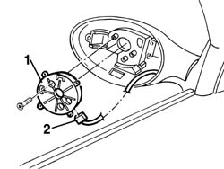

7005R36 door mirror motor - r r
- Path
- Procedures > 70 FITTINGS > 7005 PASSENGER COMPARTMENT FRONT SIDE DOORS > 7005R front door mirrors > 7005R36 door mirror motor - r r
- Kind
- repair procedure (removal / refitting; the operation number is the code)
- Applies to
- all engines; all production periods
- Interactive page
- https://sloeber94.github.io/elrnDB-a156/en/#/3238628
Applies to: all engines; all production periods
 Removing
Removing
 Refitting
Refitting7005R35 door mirror reflector - r r
1. Undo the bolts and remove the motor.
2. Disconnect the electrical connection.

Applies to: all engines; all production periods
Refitting
RemovingCheck that the motor is undamaged, and if necessary conduct an electrical test on it.
Connect the electrical connection.
Fit the motor and secure with bolts.
7005R35 door mirror reflector - r r
Check that the door mirror is working properly.